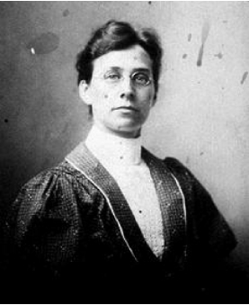

Fannie Bolton's confession in 1901
Fannie Bolton, one of Ellen G. White's many secretaries, explains in her April 1901 confession why Ellen fired her three times. You will see that it was difficult for Fannie to get the "Spirit of Prophecy" (Ellen G. White) to be honest with her sources she was using in her books. Ellen knew if word got out that she was using secular sources people would no longer believe she was getting her material directly from God's throne as she claimed. If Ellen could not stop the Bolton leak then people would see Ellen as a liar. (See also John Kellogg's letter to E. S. Ballenger about Ellen slapping Fannie's face.)
A Confession Concerning "The Testimony of Jesus Christ" W.D.F. 445 1901
…I have to some degree believed that Sr. White was a prophet of God; but some things in connection with using matter from other writers and the editorial relation that were out of harmony with my early school training and the maxim's applicable to secular literature and uninspired literature, started doubt and questioning as to why this relation was not thoroughly acknowledged, and the sources of quotation credited as in the authors of the world.
Sr. White writes about quotations in the last page of the preface of Great Controversy as follows: "The events which have marked the progress of reform are matters of history. . . In some cased where a historian has so grouped together events as to afford, in brief, a comprehensive view of the subject, or has summarized details in a convenient manner, his words have been quoted; but except in a few instances no specific credit has been given, since they are not quoted for the purpose of citing authority, but because his statements affords a ready and forcible presentation of the subject.
This uncredited matter and an unacknowledged editorial relation with some human frailties in Sr. White, with dull spiritual perception and a distorted vision of truth, caused me to lose sight of the sacred character of the work, and I lost to a great extent my realization that the work through Sr. White was "the testimony of Jesus." I tried for years to harmonize what seemed to me inconsistency in the work with a worldly literary maxim that requires an author to acknowledge his editors and to give credit to all works from which he quotes. In contending that Sr. White was not open and honest about this matter, I supposed myself standing for a principle of ordinary justice and literary honesty….
…Three times I was dismissed from Sr White's work because of relating my trouble, many times in honest effort to find some one to give me a harmonious explanation of the tormenting perplexity. My sorrow and anguish at the anguish it caused was not feigned, and yet, not understanding the cause of my removal, I made confessions that did not touch the point, because I was blinded to it, and though confessing that I had in some way done harm to the work, I held to the position in my mind that Sr. White should acknowledge her editors and every source from which she obtained suggestion or expression . . . . . I rebelled in heart against what I considered the taking of undue credit on the part of Sr. White in receiving unqualified commendation for books or articles which Marian Davis, myself and others had expended editorial work. My rebellion on this point, together with poor health, finally led me to leave the work in Australia….
…Sr. White wrote me a very sharp testimony, declaring that she had been shown that I was an enemy to her work, that I had misrepresented her and caused the ruin of my own influence. In spite of this dreadful testimony, I persisted in thinking that it was not the position I had taken or the words I had spoken; but the spirit I had cherished that had caused the misgivings, and thus far I confessed to Sr. White. When I was cut off from the work, shut out of the papers, and looked upon as an enemy to the truth, I felt terribly misjudged, and drew the sympathy of many by relating my trials and disseminating my perplexities… I have asked many persons to explain the supposed inconsistencies in connection with this gift, and have found but few who could give me any light. I am largely indebted to Elders Irwin, Olson and Rupert, whose spiritual insight and kind words and prayers have helped me in my time of need.
…The individual work I will do as God opens it to my mind. In the past I have confessed to brother Prescott and others that I had misrepresented S. White, not because I was convicted, but because Sr. White had said so, and because I was urged to do so upon that ground whether I saw it or not.
…I rejoice today in the "Testimony of Jesus" I thank God that he has kept Sr. White from following my suppressed superior wisdom and righteousness and has kept her from acknowledging editors or authors; but has given to the people the unadulterated expression of God's mind. Had she done as I wished her to do, the gift would have been degraded to a common authorship, its importance lost, its authority underminded and its blessing lost to the world. I have thought her words very hard when she said that "Satanic influences" worked through me, but I can see today that in the attack made through me, I have been the deceived tool of the dragon who hates the commandments of God and the Testimony of Jesus Christ.
...As for reconciliation with Sr. White it will come in God's own time. I have prayed for the healing of the breach between us, and someday the mists will all be cleared away . . . . . . For four years I have been without the camp. I am reconciled to stay there and bear my reproach patiently.
FANNIE BOLTON (emphasis added)

Fannie Bolton
Born: August 1, 1859, Chicago
Died: June, 28 1926, Battle Creek
Robert K. Sanders, Founder and Editor of Truth or Fables, 1997–2012
Life Assurance Ministries assumed ownership of Truth or Fables in 2012
© 2016 Life Assurance Ministries. All rights reserved.